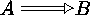

Xy-pic User's Guide 


><|ox+/()[] | tip characters |
-.~:= | shaft characters |
When an arrow is interpreted by Xy-pic it is first split into the three components and then each component is looked up in a library of so-called "directionals." It is possible to add new such directionals using the command
\newdir{ directional }{ composite }
|
where directional should be a sequence either of tip
characters or of shaft characters, and composite should be a
list of objects separated with * just like
the argument to \composite described in
section 2.2. If arrows of a particular
variant (always one of the letters ^_23) needs an
alternate definition then another declaration can be given with the
variant inserted between \newdir and the first {.
There is one object modifier which is very useful in this
context, in addition to those of section 2.2:
!vector | shift object vector |
(where the possibilities for vector are described in section 2.6). Combined with the direction code this is very powerful, for example,
\newdir{|>}{%
!/4.5pt/@{|}*:(1,-.2)@^{>}*:(1,+.2)@_{>}}defines a new tip that makes
\xymatrix{ A \ar @{=|>} [r] & B }typeset  . Notice how the "relative direction" is used here to rotate some of the composed components.
) is also a
tip character so we can define the directional > to generate
a "tail-spaced" arrow. Do this such that
\xymatrix{ A \ar @{>->} @< 2pt> [r]
\ar @{ >->} @<-2pt> [r] & B }typesets
Finally, when Xy-pic diagrams are used in conjunction with Knuth's computer modern fonts then the declaration
\SelectTips{cm}{}
|
will change the tips to some that look similar, e.g.,
$\SelectTips{cm}{}
\xymatrix@1{A\ar@{->>|}[r]&B}${}) can be used
to specify a point size {10}, {11}, or {12}, if desired (the
default is {10} );
); {cm} can be
replaced by {eu} and {xy} to get tips in "Euler" and the
default technical style, respectively. The declaration respects
TeX grouping.
\objectobject one can typeset an Xy-pic object
(anything that could follow a * in section 2.2) in
any context.
Xy-pic User's Guide